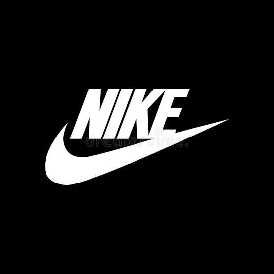
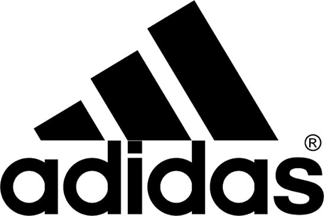
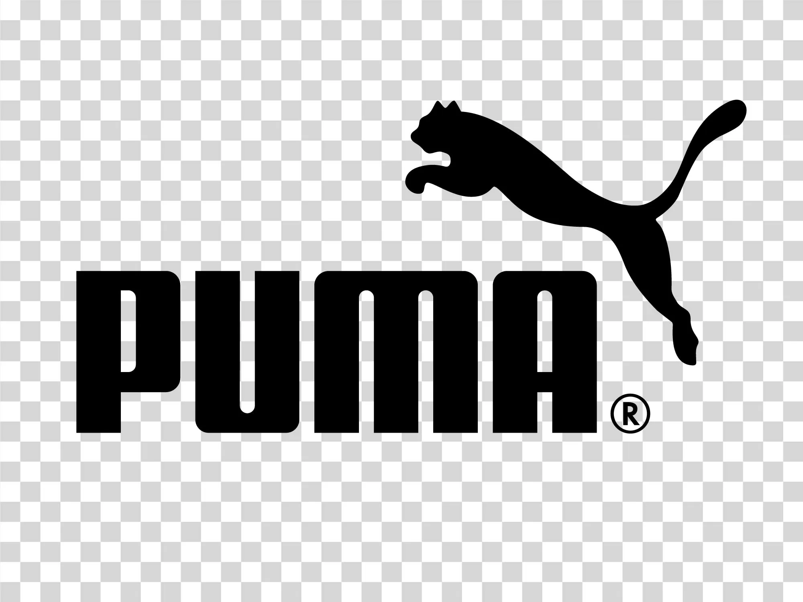

Nike არის მსოფლიოში ერთ-ერთი ყველაზე ცნობილი სპორტული ბრენდი, რომელიც აწარმოებს სპორტულ ტანსაცმელს, ფეხსაცმელსა და აქსესუარებს. კომპანია გამოირჩევა ინოვაციური დიზაინითა და მაღალი ხარისხის პროდუქტებით, რომლებიც პოპულარულია როგორც პროფესიონალ სპორტსმენებში, ისე ყოველდღიურ მომხმარებლებში.

Adidas არის გერმანული სპორტული ბრენდი, რომელიც ცნობილია თავისი მაღალი ხარისხის სპორტული ტანსაცმლით, ფეხსაცმლითა და აქსესუარებით. კომპანია აქტიურად თანამშრომლობს სხვადასხვა სპორტსმენებთან და გუნდებთან, რაც მას მსოფლიო ბაზარზე ერთ-ერთ წამყვან პოზიციაზე აყენებს.

Puma არის გერმანული სპორტული ბრენდი, რომელიც გამოირჩევა ინოვაციური დიზაინითა და მაღალი ხარისხის პროდუქტებით. კომპანია აწარმოებს სპორტულ ტანსაცმელს, ფეხსაცმელსა და აქსესუარებს, რომლებიც პოპულარულია როგორც სპორტსმენებში, ისე ყოველდღიურ მომხმარებლებში.